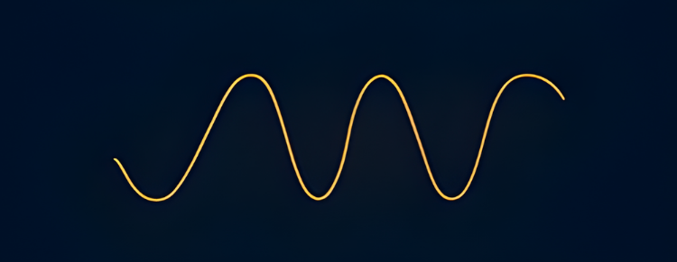

Estelligance®, veriyi analiz eden değil, anlamlandıran bir zeka platformudur. Veriyi yalnızca sayısal bir çıktı olarak değil, bir bütünün parçası olarak ele alır; görünmeyen ilişkileri ortaya çıkarır, yüzeyin altındaki yapıyı okur ve karmaşık bilgiyi sade bir anlama dönüştürür.
Çok katmanlı yapısıyla piyasayı okur, zamanı çözer ve sinyalleri ortaya çıkarır. Farklı veri akışlarını tek bir çerçevede birleştirerek yalnızca mevcut durumu değil, olası yönleri de görünür kılar; böylece belirsizlik içinde netlik üretir.
ESTELLIGENCE®, klasik analiz yaklaşımının ötesine geçer. Yalnızca veri sunmaz; verinin arkasındaki yapıyı okur, ilişkileri kurar ve stratejik anlam üretir.
Veriyi izole değişkenler halinde değil, birbirini etkileyen dinamik bir yapı içinde değerlendirir.
Statik raporlar yerine, zaman içinde değişen örüntüleri ve yön sinyallerini görünür hale getirir.
Tek boyutlu analiz yerine, farklı veri akışlarını aynı analitik mimari içinde birleştirir.
Sadece yorum üretmez; verinin altında çalışan sistemi, kırılma alanlarını ve olası yönleri ortaya koyar.

Estelligance®, çok katmanlı bir yapı ile çalışır.
Her katman farklı bir sinyal üretir.
Bu sinyaller birleştiğinde anlam ortaya çıkar.
Veri setleri üzerinden piyasa dinamiklerinin çok katmanlı incelenmesi.
Küresel ve yerel ekonomik göstergelerin entegre analizi.
Lokasyon bazlı arz, talep ve fiyat davranışlarının değerlendirilmesi.
Veri temelli sinyallerle geleceğe yönelik senaryo üretimi.
Farklı veri akışlarının tek bir analiz yapısında birleştirilmesi.
Dijital sistemler ve yazılım verilerinin analitik değerlendirilmesi.
Finansal göstergeler üzerinden piyasa yönünün okunması.
Kullanıcı ve piyasa davranışlarının veri üzerinden modellenmesi.
Bilimsel ve teknik veri üzerinden derin analiz üretimi.
Belirsizliği Yorumlamak Değil, Yapılandırmak İçin
Kurumsal ihtiyaçlarınıza uygun analiz, modelleme ve stratejik içgörü yapısını birlikte kurgulayalım. Veriyi daha net okumak, sinyali daha erken görmek ve karar süreçlerini daha sağlam bir zemine taşımak için iletişime geçin.
İletişime Geç